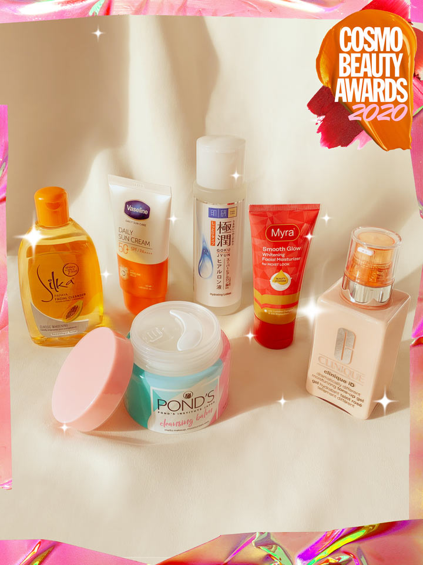
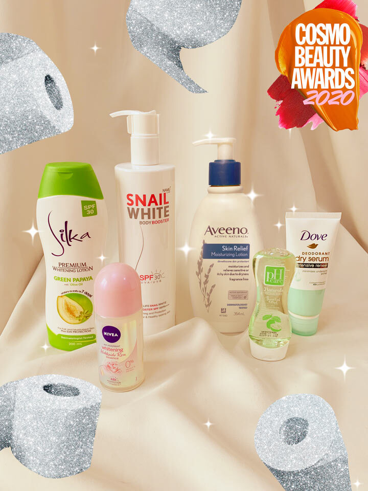
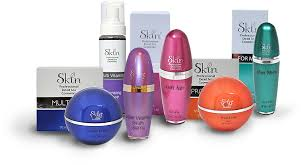

Control of environment of manufacturing premises Control of personal hygiene Development of an effective cleaning & sterilization programme Monitoring of quality of water supply Observation of quality of water supply Use of adequate preservatives Monitoring of microbial quality of cosmetics during manufacturing stages. Control of microbial contamination In manufacturing of cosmetics 5

Foot Powders and Sprays are products applied to the feet to reduce the odor caused by the bacterial breakdown of perspiration. Foot Powders and Sprays work either by using fragrance to cover up malodor or by absorbing perspiration that leads to formation of malodor. The safety of Foot Powders and Sprays is established by selection of ingredients that are safe and suitable for this purpose. In addition, Foot Powders and Sprays are assessed for their potential to cause skin irritation or cause allergic reactions. Product safety is also established though strict adherence to the principles of Quality Assurance and Good Manufacturing Practices. This includes testing the compatibility of the product with packaging as well as shelf-life stability. Finally, the safety of products is monitored in the market-place to track any reports of consumer injury.

Face and Neck Creams/Lotions are products that are intended to moisturize and soften the face and neck. They are often semi-solid emulsions of oil and water. Face and Neck Creams/Lotions contain special ingredients that help to replace the oils contained in the skin or to protect against the loss of moisture from the skin. The safety of Face and Neck Creams/Lotions is established by selection of ingredients that are safe and suitable for this purpose. In addition, Face and Neck Creams/Lotions are assessed for their potential to cause skin irritation or cause allergic reactions. Product safety is also established though strict adherence to the principles of Quality Assurance and Good Manufacturing Practices. This includes testing the compatibility of the product with packaging as well as shelf-life stability.

Body and Hand Creams/Lotions are products that are intended to moisturize and soften the body and hands. They are often semi-solid emulsions of oil and water. Body and Hand Creams/Lotions contain special ingredients that help to replace the oils contained in the skin or to protect against the loss of moisture from the skin. The safety of Body and Hand Creams/Lotions is established by selection of ingredients that are safe and suitable for this purpose. In addition, Body and Hand Creams/Lotions are assessed for their potential to cause skin irritation or cause allergic reactions. Product safety is also established though strict adherence to the principles of Quality Assurance and Good Manufacturing Practices. This includes testing the compatibility of the product with packaging as well as shelf-life stability.